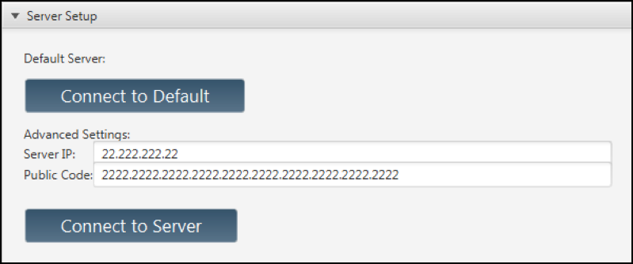
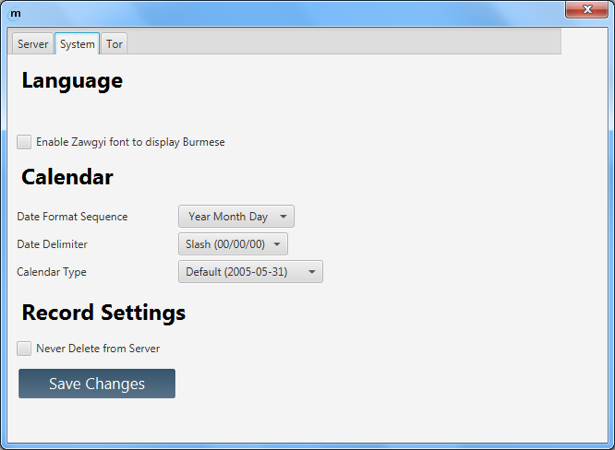
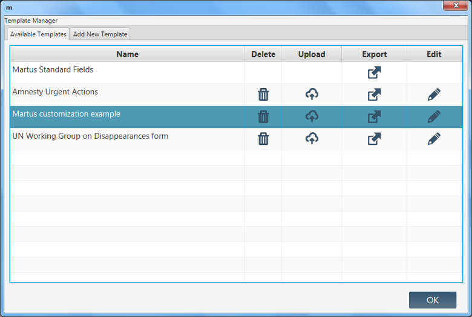

Managing Records
Folders and Organization
Default views and folders
Martus automatically includes three permanent views: All, Saved, and Received. (These default labels are different from some earlier versions of Martus. If you upgrade from a version earlier than Martus 5.0, your old labels will automatically be migrated to this new folder structure, so your records will not be lost.)
All
All records on your local machine will be listed under the All view.
Saved
The Saved view contains all records that you have saved, whether they are versioned or not or shared with contacts, and whether they have been sent to the server or not.
Received
This view contains records you’ve received from another Martus user. These records are included in searches and you can copy or move them to different folders.
An Imported Records folder will be created if you load any records into Martus using the Import Record icon  in the Martus sidebar.
in the Martus sidebar.
Create New Folders
Create additional folders to categorize records according to your interests or current projects.
- Select the Add icon
 from the Martus sidebar.
from the Martus sidebar. - Input a name for the new folder.
- Select Create.
Rename Folders
- Double-click the folder you would like to rename.
- Input a new name for the folder.
- Select Rename.
Note: You cannot use punctuation in a folder name, but you can include spaces. You can also use characters from non-Latin alphabets, such as Arabic or Russian.
You can’t rename permanent views such as All, Saved, and Received.
You can rename the Imported Records folder, however Martus will create a new Imported Records folder the next time you import data into Martus.
Delete Folders
Deleting a folder removes the folder and moves all records under that label to the Trash.
- Select the folder you would like to remove.
- Select the Delete icon
 from the Martus sidebar.
from the Martus sidebar. - Read the informational text.
- Select Delete to confirm deletion.
Move records
- Select the records that you would like to move.
- Select the Move icon
 in the taskbar below the main list pane.
in the taskbar below the main list pane. - Select the folder under which you would like the record to be moved.
- Uncheck Remove from… to keep the record(s) listed under multiple folders.
- Select Move.
Note: The multiple listings will still be considered one record.
Note: You may also create a new folder in which to save your search results using the Add icon in the Martus sidebar and then following the above directions after performing a search.
Copy a record
Unlike moving a record, copying a record creates a new record based on the original. The new record must be renamed to differentiate it from the original.
- Select the record that you would like to make a copy.
- Select the Copy icon
 in the taskbar below the main list pane.
in the taskbar below the main list pane. - Enter a new name for the copy of the record.
- Uncheck Remove from Existing? to keep the record(s) under multiple folders.
- Select Copy.
Note: Only one record can be copied at a time.
Martus is finding either more or fewer records than I expected. What could be causing this?
I deleted a record from the Trash, but it still appears in another folder.
Discarding and Deleting records
Delete
Deleting a record from a folder does not delete the record from your local device or the server. The record moves to the Trash, located in the Martus sidebar where it can still be viewed or moved, but not edited.
- Select the record you would like to delete.
- Select the Delete icon in the taskbar below the main list pane.
Delete Records from your Hard Drive
Once you delete a record from your hard drive, you cannot retrieve it unless it is stored on the server.
- Select the Trash icon
 from the Martus sidebar.
from the Martus sidebar. - Review the records listed in the Trash to be sure you do not accidentally delete important records.
- Select Empty Trash.
You do not need to do anything further to ensure that deleted records are removed from your hard drive. Unlike most computer data, Martus records are encrypted files on your hard drive—including your own records, records created by other people, and deleted records. Therefore, unless someone gains access to your Martus account, they cannot read the records you store in your folders or the records you’ve deleted.
Delete Records from the Server
Once you delete a record from the server, you cannot retrieve it unless you have a local or exported copy.
- Select the Sync Manager icon
 from the Martus sidebar.
from the Martus sidebar. - Select the desired record.
- Select Delete from Server.
Note: If the Delete from Server option is not available for the record you have selected, the record has either not been uploaded to the server or is a record shared with you by another Martus account. Shared records cannot be deleted from the server by anyone but their original author.
I deleted a record from the Trash, but it still appears in another folder.
Importing and Exporting Records
Export record data
Martus allows you to export encrypted (*.mba) and unencrypted (*.xml) record files which can then be imported back into Martus.
Exporting Encrypted Records
Encrypted records are exported as .mba (Martus Bulletin Archive) files.
- Select the records you want to export.
- Select the Export icon
 in the taskbar below the main list pane.
in the taskbar below the main list pane. - To specify a location other than your Martus directory to export selected records, select Send To
- Select a location from the Export to which folder? window.
- Choose Select Folder.
- Select Export from the Export window.
Exporting Unencrypted Records
When exporting unencrypted records, all information will be saved as plain text and anyone who gets a copy of the file will be able to read its contents. These files can be used to import record data back into Martus or into another application.
- Select the records you want to export.
- Select the Export icon in the taskbar below the main list pane.
- Uncheck Encrypted?
- Check Include attachments to export any record.
- To specify a location other than your Martus directory to export selected records, select Send To
- Select a location from the Export to which folder? Window
- Choose Select Folder.
- Select Export from the Export window.
Import records
You can import encrypted .mba record files or unencrypted XML record files.
from the Martus sidebar.
To find out more about creating Martus XML import files from your electronic data (for example, spreadsheets or other databases), please see examples in the Martus source-code (available on the Martus CD or at the Google Code Archive - Martus) and email martus@benetech.org if you need additional assistance.
If you have a very large file to import, or your import has a lot of special characters in it (e.g. < > ' " ) you may receive import errors. If the size of the file is the issue, you can try splitting into smaller files. Please contact martus@benetech.org if you need help with any import issues.
Can I backup my Martus data onto an external hard drive or other removable media?
Settings and Preferences
Change the Interface Language
If you are logged into a Martus account, you will need to exit the application to switch the user interface language.
- Close and restart Martus.
- Select a language from the dropdown in the Martus SignIn dialog box.
- Sign into or create an account.

For more language help see Languages in the Troubleshooting section.
Server Settings
View Current Server Connection
- Select Settings > Server Settings.
- Choose Current Connection to view the Server IP and Public Code of the current server.
Configure a Server
- Select Settings > Server Settings.
- Choose Server Setup.
- Select a server.
- Select Connect to Default to use a Martus server without manually inputting any server information; or
- Input the Server IP and Public Code of the server of your choice in the Advanced Server Setup section and select Connect to Server.
- A server compliance message will appear. Select Accept if the server compliance statement meets your needs. If the server doesn’t meet your needs, select Reject and then select a different server.

Note: Server compliance guidelines are available at martus.org, in the “Download Martus Server” section. Compliant servers are expected to be secure; servers that deviate from the server compliance guidelines may be less secure. If you have questions about whether a server meets your needs, ask the person who determines policies for using Martus in your organization—or send a message to martus@benetech.org.
Manage Server Defaults
- Select Settings > Server Settings.
- Choose Server Preferences.
- Have Server Default to On?: Select Yes to automatically connect to a server whenever using Martus.
- Automatically Download Files from Server?: Select Yes to download records from the server at regular intervals of your choosing.
- Select Save Changes.
The Onion Router, or Tor, is software and an open network that provides anonymity and privacy protection over the internet. Tor routes an internet user’s traffic through a global network of relays in such a way as to obscure both the origin and the destination of the traffic. By bouncing your communications around a distributed network all around the world, Tor helps defend against a form of network surveillance known as traffic analysis. It will make sending records harder to track, but also much slower.
WARNING: Before using Tor, please read the full list of warnings available at https://www.torproject.org/download/download#warning. If you have any questions about what Tor does or does not do, or any other Tor-specific questions, email the Tor support team at help@rt.torproject.org. (For questions about Martus and Tor, email the Martus support team at martus@benetech.org)
Tor Preferences
Using Tor will make it harder to track the route your record takes to the Martus server, and may allow you to reach the Martus server if it is blocked from your current location, but will also make sending and receiving records slower. For more information about Tor, go to https://www.torproject.org/ or see Frequently Asked Questions.
Using Tor
Turn embedded Tor On and Off using the Tor switch  in the main Martus taskbar. Select Settings > Tor Preferences for more information about Tor.
in the main Martus taskbar. Select Settings > Tor Preferences for more information about Tor.
System Preferences
Language
Burmese script needs Zagwyi enabled which you can do by clicking the box under system preferences. To change the interface language you must re-enter Martus.
Manage Calendar Settings
- Select Settings > System Preferences
- Choose your preferred Date Format Sequence, Date Delimiter, and Calendar Type using the corresponding dropdown menus.
- Select Save Changes.

Manage Deletion of New Records from Server
- Select Settings > System Preferences
- Check/uncheck Never Delete from Server to disallow/allow deletion of new records sent to the server.
- Select Save Changes.
Note: This action only affects new records saved to the server after updating this option.
Upgrading Martus
- Download the new version, and double click.
- The installer notifies you that you have an older version of Martus installed. Click Yes to upgrade. The new version of Martus is installed into the same directories as the older version. All data files, including account information, passwords, and records, remain intact.
- Decide whether to install a Martus shortcuts in the Windows Start menu and on the Desktop.
I want to upgrade to a new version of Martus. Do I need to remove the old version first?
Managing Templates
Import Templates from the Server
- Select the Template Manager icon in the Martus sidebar.
- Select Add New Template.
- Select Generic to import generic Martus form templates; or
- Select From Another Martus User to import forms from a Contact or another Martus User.
- Download from my Contacts allows you to choose an existing Contact from whom you would like to import form templates.
- Download from Another Martus User allows you import form templates from a Martus account that you have not added as a Contact (e.g. a trainer) by inputting that account’s Access Token.
- Select Add to add the selected template to your list of Available Templates.
- Select the Edit icon
 to optionally modify the template Title and Description. Select OK.
to optionally modify the template Title and Description. Select OK. - Select OK to exit.

Import Templates from a File
- Select the Template Manager icon
 in the Martus sidebar.
in the Martus sidebar. - Select Add New Template.
- Click Import Template.
- Select the file exported by you or another Martus account.
- Click OK in the confirmation dialog box.
- Select Add to add the selected template to your list of Available Templates.
- Select the Edit icon to optionally modify the template Title and Description. Select OK.
- Select OK to exit.

Note: If you try to import a template created by an account that is not one of your Contact accounts (or your current account), Martus will warn you before you load the template.
Upload Templates to a Server
- Select the Template Manager icon in the Martus sidebar.
- Select the Upload icon for the template you wish to send to the server.
- Read the Send Template to Server dialog box. If you want to proceed, click Yes.
- Select the Edit icon to optionally modify the template Title and Description. Select OK.
- Select OK to exit.
Export Templates
- Select the Template Manager icon in the Martus sidebar.
- Choose the Export icon for the template you wish to export.
- Enter a name for the template file. Martus saves the file with a .mct (Martus Customization Template) or .xml extension in your account directory in the Martus folder on your hard drive, and confirms that it has been saved. You can also save the file to another location if desired.
- Select OK to exit.
Note: If you are using multiple templates, we recommend choosing descriptive filenames for each template.
- If you want to share the customization template with a Contact or other Martus account, give them your .mct file.
Note: Templates can be imported during account creation or in the Template Manager by any Martus account holder to whom you have given your Martus Account Access Token or the exported *.mct file.